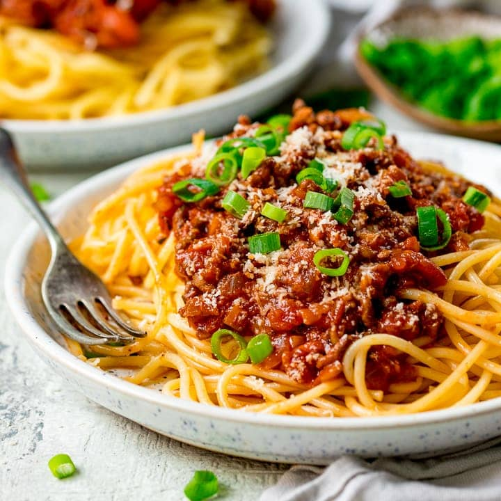

Spaghetti a la boloñesa
"La cocina de Brian Villarreal"

Ingredientes
Ingredientes para 4 comensales:
- 1 bote de tomate triturado
- 500gr de spaghetti
- 1 cucharada de azúcar
- 1/2 cebolla
- 1 diente de ajo
- 1/2 limon en jugo
- Queso parmesano rallado
- 400gr de carne picada
- Albhaca fresca
- Oregano
- Perejil
- Aceite de oliva extra virgen
- Sal a gusto
Preparacion
- Para preparar la salsa boloñesa necesitamos colocar una cacerola en el fuego y calentar en ella un chorro generoso de aceite de oliva virgen extra. Cuando lo tengamos listo, echamos el diente de ajo, previamente pelado y laminado, hasta que coja calor. Entonces, echamos la cebolla, bien picadita, y dejamos que se cocine.
- Cuando la cebolla agarra color, echamos el tomate triturado y bajamos el fuego para que se haga sin poner la cocina patas arriba. Pasados un par de minutos, echamos la sal al gusto juntos con una cucharada de azúcar para quitar la acidez del tomate, y un poquito de orégano y perejil. Removemos bien todo y dejamos que el tomate se cueza unos 15 minutos con el fuego bajo.
- En un bol aparte mezclamos la carne picada con el zumo de medio limón, y lo aderezamos con un poquito de perejil y sal al gusto. Ponemos aceite de oliva virgen extra en una sartén y, cuando esté caliente, echamos la carne en ella y la dejamos hasta que esté doradita pero no hecha del todo
- Entonces, echamos la carne en la cacerola con la salsa de tomate y dejamos que termine de hacerse a fuego lento.
- Mientras vamos cociendo los espaguetis en una cacerola con agua abundante y un poquito de sal al gusto. Cuando estén al dente, los escurrimos y los echamos en la cacerola de salsa boloñesa para que cojan todo el sabor de la carne y del tomate.
"A la hora de servir los espaguetis boloñesa, podemos añadir un poquito de queso parmesano rallado y, si nos gusta, albahaca fresca que les da un sabor buenísimo."